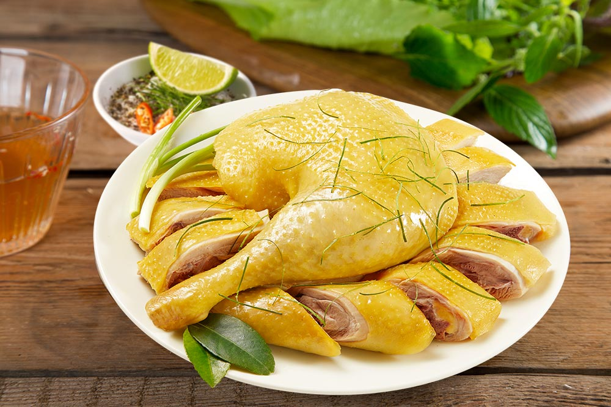

Gà Luộc (Boiled Chicken)

Description
Boiled chicken is a popular dish in Vietnamese cuisine, made by cooking chicken using the boiling method. The chicken is placed in a pot and cooked thoroughly in hot water or chicken broth. When served, boiled chicken is usually chopped into pieces.
Ingredients
- A whole chicken
- Chicken Giblets (1 set)
- Ginger (½ knob)
- Shallots (3 pcs)
- Lime leaves (5 leaves)
- Salt (2 tbsp)
- Seasoning granules (1 tbsp)
- MSG (1 tbsp)
- Ground pepper (0.2 g)
- Water (3 liters)
Steps
- Wash the whole chicken, lime leaves, chicken giblets, and all prepared ingredients thoroughly.
- Peel the ginger and slice it thinly, also crush the shallots.
- Boil the water, adding shallots, ginger, salt, seasoning granules, MSG and ground pepper
- Add the chicken to the pot and continue boiling until it comes to a full boil, then reduce the heat and add the fresh lime leaves.
- Continue boiling for 10 minutes then turn off the heat and let it sit covered for another 15 minutes.
- Take the chicken out and blanch it in ice water for about 3-5 minutes before serving.
- Serve the chicken along with finely sliced fresh lime leaves and a mixture of salt, pepper, and lime (or chili).
References
"Gà Luộc" - MeatDeli